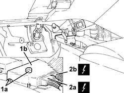

2135B52 electronic automatic transmission electric circuit - r r
- Path
- Procedures > 21 GEARBOX > 2135 AUTOMATIC TRANSMISSION EXTERNAL CONTROLS > 2135B automatic transmission electrical controls > 2135B52 electronic automatic transmission electric circuit - r r
- Kind
- repair procedure (removal / refitting; the operation number is the code)
- Applies to
- engines: 2.5 V6; all production periods
- Interactive page
- https://sloeber94.github.io/elrnDB-a156/en/#/3238007
Applies to: engines: 2.5 V6; all production periods; only with equipment: Q-System
 Removing
Removing
 Refitting
Refitting7040A65 passenger compartment box lock , one , r r
1. Undo the nuts and withdraw the electronic automatic transmission control unit as much as necessary.
2. Disconnect the electrical connections (2a) and (2b), then remove electronic automatic transmission control unit.
 | Name | Connector |
|---|---|---|
2a | Automatic transmission control unit |
| Name | Connector |
|---|---|---|
2b | Automatic transmission control unit |

Applies to: engines: 2.5 V6; all production periods; only with equipment: Q-System
Refitting
RemovingConnect the electrical connections to the electronic automatic transmission control unit, then refit it in its seating and tighten its nuts.